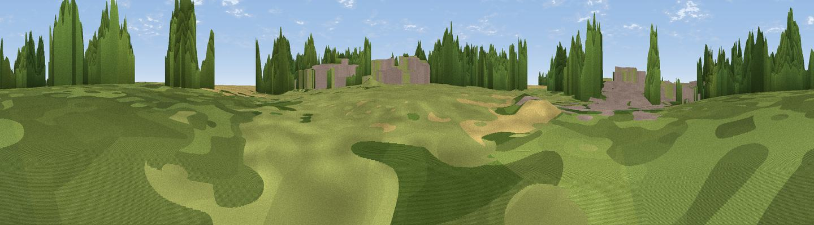

Viewpoint near Old Hurst
#45668 in England · top 90% of its area beats it · near Old HurstThe view, rendered

A 360° render of this exact spot computed from the terrain model, tree cover and land cover — summer colours, afternoon light, calibrated against photographs of famous viewpoints. Real trees, hedges and buildings will differ in detail.
The panorama
Grey silhouette: terrain skyline in each direction (720 bearings, Earth curvature and refraction included). Dashed green: skyline with trees (+15 m) and buildings (+8 m) as obstacles. Blue strip: how far the ground is visible on each bearing.
Where the view opens
Wedge length = distance to the farthest visible ground on that bearing (vegetation-aware). Rings at 10, 25 and 50 km.
What fills the view
39% grassland · 28% cropland · 23% woodland · 10% built-up
Angular shares of the visible panorama (visual magnitude), not map area. Landscape diversity 0.56 (0–1 Shannon).
Key numbers
More beautiful places nearby
The staircase of upgrades: each row has a higher view potential than everything closer. Driving times are estimates from straight-line distance, calibrated against real road routing — check an actual route before setting out.
| Place | Direction | Drive | Score |
|---|---|---|---|
| Viewpoint near Houghton | S · 6 km | ~12 min | 25.7 |
| Viewpoint near Wennington | WNW · 8 km | ~15 min | 28.1 |
| Viewpoint near Woodwalton | WNW · 8 km | ~16 min | 29.3 |
| Viewpoint near Brampton | SW · 12 km | ~22 min | 35.9 |
| Viewpoint near Sawtry | WNW · 14 km | ~26 min | 38.0 |
| Viewpoint near Coton | SSE · 23 km | ~38 min | 41.8 |
| Viewpoint near Chesterton | NW · 24 km | ~40 min | 43.0 |
| Viewpoint near Harlton | SSE · 27 km | ~44 min | 49.6 |
52.38022, -0.09175 · source: osm viewpoint · position refined by local search. Computed location — check access rights before visiting.